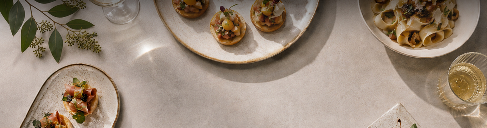

Our Menu
Our menu is fully customizable to your event. Let us know what your ideal menu looks
like!
See below for menu inspiration and photos from past events.
×


Our menu is fully customizable to your event. Let us know what your ideal menu looks
like!
See below for menu inspiration and photos from past events.